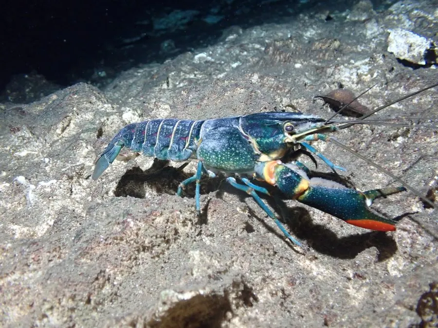

甲壳动物 · 动物界
红螯螯虾 Cherax quadricarinatus

原产澳大利亚的淡水螯虾，雄虾螯足外侧有红色斑块，个体大、出肉率高，是重要的养殖虾类，需防逃逸。
- 分类
- 门节肢动物门纲软甲纲目十足目科拟螯虾科属光螯虾属
- 栖息环境
- 温暖清澈的淡水河流、湖泊与养殖池塘
- 地理分布
- 原产澳大利亚北部，现被中国等地引种养殖
- 保护级别
- 暂无评估；养殖中需防止逃逸
物种志
红螯螯虾体长可达 15–20 cm，体重 100–200 g，体色蓝绿至暗褐色，螯足粗壮，雄虾螯足外侧有一块鲜红色斑块，因此得名；腹部和尾扇也带红色。
它原产于澳大利亚北部的淡水河流和湖泊，喜欢温暖、水质清新的水体，杂食，取食水草、藻类、小动物和有机碎屑。红螯螯虾生长快、个体大、出肉率高，20 世纪 90 年代起被引入中国等地养殖。不过它适应力强，一旦逃逸到自然水体，可能掘洞、取食水生植物和小动物，与本地物种竞争，因此养殖时需要防逃设施，并避免随意放生。雌虾抱卵量随个体增大而增加，孵化后幼虾附着在母体腹部一段时间。
形态与习性
- 食性杂食，取食水草、藻类、小动物和有机碎屑
- 体长约 15–20 cm，体重 100–200 g
- 识别雄虾螯足外侧有鲜红色斑块
- 养殖生长快、出肉率高，是重要养殖虾类
- 风险逃逸后可能掘洞、与本地物种竞争
- 分布原产澳大利亚北部
趣味知识
- 红螯螯虾雄虾的螯足外侧有一块鲜红色斑，名字由此而来。
- 它个体大、出肉率高，是澳洲淡水龙虾中的养殖主力。
- 养殖红螯螯虾必须做好防逃，不能随意放生到自然水体。